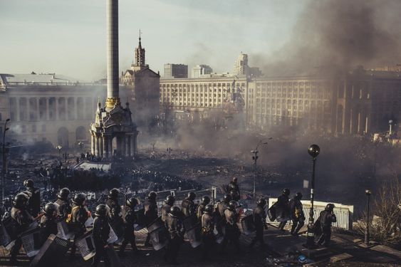

Безсмертність Героїв: Відповідь на загадку
Існує вічне питання, чи вмирають герої? Багато історій, книг, фільмів та легенд розповідають про хоробрих героїв, які віддають своє життя ради інших або відстоюють високі ідеали. Проте, дехто вважає, що справжні герої ніколи не вмирають, вони залишаються живими в наших серцях та пам'яті назавжди.
Герої нашого часу
Азовсталь
Азовсталь (Азовський металургійний комбінат) - це один з найбільших металургійних комбінатів України, розташований у місті Маріуполь на узбережжі Азовського моря. Комбінат спеціалізується на виробництві сталі та прокату, і є провідним виробником металургійної продукції в країні.
Оборона «Азовсталі»
Оборона «Азовсталі» (також битва за «Азовсталь», штурм «Азовсталі») — бойові дії, що тривали з 18 березня до 20 травня 2022 року на території маріупольського металургійного комбінату «Азовсталь» і на прилеглій території та відбувалися в рамках боїв за Маріуполь під час російського вторгнення в Україну. Бої вели Збройні Сили України з одного боку, і окупаційні збройні сили РФ та підтримувана нею терористична організація так званої ДНР — з іншого.
Облога
Управління оборони Маріуполя взяло на себе загін спеціального призначення "Азов" через некомпетентність інших підрозділів. Російські сили взяли в облогу українських військовиків на території комбінату "Азовсталь", проте фортифікаційні роботи наземного штурму ускладнили. Сили оборони заводу поповнили військовослужбовці 36-ї окремої бригади морської піхоти ВМС ЗСУ та інших підрозділів, які прорвалися з оточення на металургійному комбінаті імені Ілліча. Російським військам не вдалося досягти успіху під час спроб штурму території металургійного комбінату. Окупанти систематично відмовлялися дозволити оточеним на «Азовсталі» людям покинути Маріуполь, зокрема, за твердженнями української сторони, блокуючи гуманітарні коридори навіть цивільних. На 8 травня 2022 року командир 36-ї бригади морської піхоти Володимир Баранюк вирішив втікати з оточеного міста разом із своїми підлеглими, підставивши всі сили оборони, що захищали місто. Станом на 16 травня на металургійному комбінаті «Азовсталь» перебувало 600 поранених захисників, 40 бійців були у дуже важкому стані. На 28 липня Росія організувала масове вбивство українських військовополонених полку «Азов».
Полон захисників «Азовсталі»
Утримання та обміни
У ніч з 21 на 22 вересня відбувся обмін полоненими між Україною та Росією, в результаті якого повернулося додому 200 українських оборонців, а також 5 командирів підрозділів, які боронили Азовсталь та Маріуполь. По домовленостям, останні повинні знаходитись у Туреччині до кінця війни під відповідальність президента Туреччини Реджепа Тайїпа Ердогана. Також було обмінено 10 іноземців, які воювали за Україну та яких російські окупанти взяли у полон.
Теракт в Оленівці
У липні 2022 року на території виправної колонії №120 в Оленівці, де утримувалися захисники «Азовсталі», російські окупанти вчинили масове вбивство полонених, в результаті якого загинуло 53 бійця полку «Азов», ще 130 отримали поранення. У вересні того ж року під час обстрілу колонії загинув 1 український військовополонений, а 4 зазнали поранень.
Сергій "Волина" Волинський
Сергій Волинський, позивний Волина, приєднався до захисників «Азовсталі», після того, як більша частина морських піхотинців 36-ї бригади не зуміла прорвати оточення з Маріуполя і потрапила в полон. Волинський звернувся до світових лідерів із закликом про порятунок цивільних та поранених. Разом з ним операцію координував Денис Прокопенко (Редис) – підполковник Нацгвардії, командир полку «Азов», Герой України й командувач Маріупольського гарнізону.
Денис "Редіс" Прокопенко
Народився 27 червня 1991 (**31 рік**). Денис став добровольцем у полку "Азов" у 2014 році **(у віці 22 років)** та прославився лідерськими якостями, ставши командиром взводу, роти, а згодом і батальйону. У вересні 2017 року призначений командиром "Азову". Запам’ятався тим, що на День Незалежності 2019 року **не виконав військове привітання** президента Володимира Зеленського. У березні 2022 року Денис отримав звання Героя України. Його дружина - Катерина Прокопенко, яка стала відомою на весь світ завдяки своїм зусиллям у роботі з міжнародними та українськими організаціями для відбудови миру в Україні та обміну полоненими. Денис потрапив до російського полону після виходу з заводу "Азовсталь" **20 травня 2022 року** та був звільнений 21 вересня разом з іншими 214 військовими.
Святослав "Калина" Паламар
Святослав Паламар - український військовик, який був заступником командира полку «Азов». Він брав участь в обороні Маріуполя під час російського вторгнення в Україну. Він також є учасником Помаранчевої революції та Революції Гідності. Народився в містечку поблизу Львова та закінчив навчання в Львівському торговельно-економічному університеті. Святослав з перших днів російського вторгнення в Україну брав участь в обороні Маріуполя. Він був в облозі з 1 березня 2022 року і завдавав відчутні втрати ворогу. Він записав відеозвернення 10 квітня 2022 року та заявив про готовність евакуюватися разом із цивільними мешканцями, пораненими бійцями та тілами загиблих, з оточеного Маріуполя. Святослав Паламар - герой України, який віддає своє життя за свою країну та зневажає російську агресію.
Катерина "Пташка" Поліщук

У весні 2022 року українська парамедикиня з позивним "Пташка" стала відомою в Україні та світі завдяки відео на соцмережах, де вона співає пісні ОУН-УПА в підвалах "Азовсталі". Цим вона хотіла привернути увагу до поранених цивільних та військових у Маріуполі. Пташка - музикантка за освітою, яка служить парамедикинею у "Госпітальєрах" із 2021 року. Після того, як російські війська розбомбили шпиталь, вона допомагала гарнізону "Азовсталі". Пташка закінчила Тернопільський мистецький коледж ім. Соломії Крушельницької, грає на бандурі та пише вірші. 21 вересня 2022 року 21-річна Поліщук повернулася із російського полону внаслідок проведеного обміну полоненими. За словами її брата Романа Поліщука, суперсилою Пташки є те, що вона завжди йде до своєї мети, хай би як важко було, добивається свого.
Дмитро "Орест" Козацький
20 травня 2022 року світ облетіли фото поранених бійців з «Азовсталі», яка перебувала в осаді російських військ. Фото Козацького розповіли про мужність українських військових та пекло, в якому опинилися захисники міста. Улітку роботи Козацького отримали нагороду польського конкурсу Grand Press Photo 2022. Фотографією Козацький захоплювався з юнацтва, казав, що це його покликання. «Найбільше Діму характеризує його фотографія з «Азовсталі» «Світло переможе», бо навіть перебуваючи у самому пеклі, він продовжує вірити у краще», – каже сестра Дар’я Юрченко.
Михайло "Мішаня" Діанов

Михайло Діанов народився 1 травня 1980 року у Тернополі. Навчався у професійно-технічному училищі та закінчив музичну школу, клас фортепіано. Був адміністратором у Буковелі, в Чорнобилі та торговельним агентом у Тернополі. У 2015 році Діанов подався добровольцем на фронт та пішов у 79-ту окрему десантно-штурмову бригаду ЗСУ, пізніше став морським піхотинцем 36-ї бригади. Був гранатометником у приазовських степах, потім був поранений та потрапив на завод Ілліча та "Азовмаш", звідти вдалося виїхати на "Азовсталь". Став відомим після публікації світлин захисників з заводу "Азовсталь" у травні 2022 року. Поранений Михайло Діанов потрапив до російського полону після виходу з заводу "Азовсталь" у травні 2022 року. У полоні пережив знущання та катування, схуд на 40 кг. Був звільнений з полону 21 вересня разом з іншими 214 військовими. Отримав кульові поранення обох ніг та правої руки та потребує довготривалого лікування за кордоном. Перш ніж зробити корекційну операцію на руці, йому потрібно набрати 20 кг. Після повернення до України мріє відкрити свою майстерню з обробки металу.
Пам’ять Героїв
Небесна Сотня

Небесна сотня - це група українських активістів, які були вбиті в Києві під час Революції Гідності в лютому 2014 року. Назва "Небесна сотня" виникла тому, що вбиті активісти називали себе "Сотні" - групами з 100 людей, які працювали разом на Майдані Незалежності в Києві.
Під час протестів у 2013-2014 роках український народ вимагав відставки президента Віктора Януковича, який був звинувачений у корупції та авторитарному правлінні. Протести розгорнулися у Києві на Майдані Незалежності, де зібралася величезна кількість людей, які вимагали змін у країні.
У лютому 2014 року правоохоронні органи розпочали насильницьке розгін протестів. У ході становища на Майдані Незалежності у Києві було вбито понад сто людей, більшість з яких були активістами, що брали участь у протестах. Ці активісти були названі "Небесною сотнею".
В Україні Небесна сотня стала символом героїзму та жертовності на шляху до свободи та демократії. У країні щороку 20 лютого відзначається День пам'яті Небесної сотні, коли вшановують пам'ять загиблих активістів.
Небесна Сотня Відео
Сімейні зв'язки на передовій
Інтерв'ю з родичами солдатів про життя військової родини, виклики та перешкоди, з якими вони зіткнулися під час військової служби своїх близьких"
Інтерв’ю з дружиною Сергія Волинського
Інтерв’ю з дружиною Дениса Прокопенко
Інтерв’ю з мамою Святослава Паламара
Інтерв’ю з мамою Катерини Поліщук
Інтерв’ю з мамою Дмитра Козацького
Інтерв’ю з донькою Михайла Діанова
Відданість душі: волонтери України
Волонтерство - це один з найбільш поширених способів допомогти іншим людям. В Україні є багато відданих і відкритих серцю людей, які присвячують свій час та зусилля допомозі тим, хто її потребує. Волонтери України не тільки надають матеріальну допомогу, але і надають психологічну підтримку та стимулюють людей до дії. Вони допомагають бездомним, хворим, ветеранам, воїнам на сході країни та багатьом іншим. Волонтерство - це діяльність, яка дарує радість не тільки отримувачеві допомоги, але й самому волонтеру.